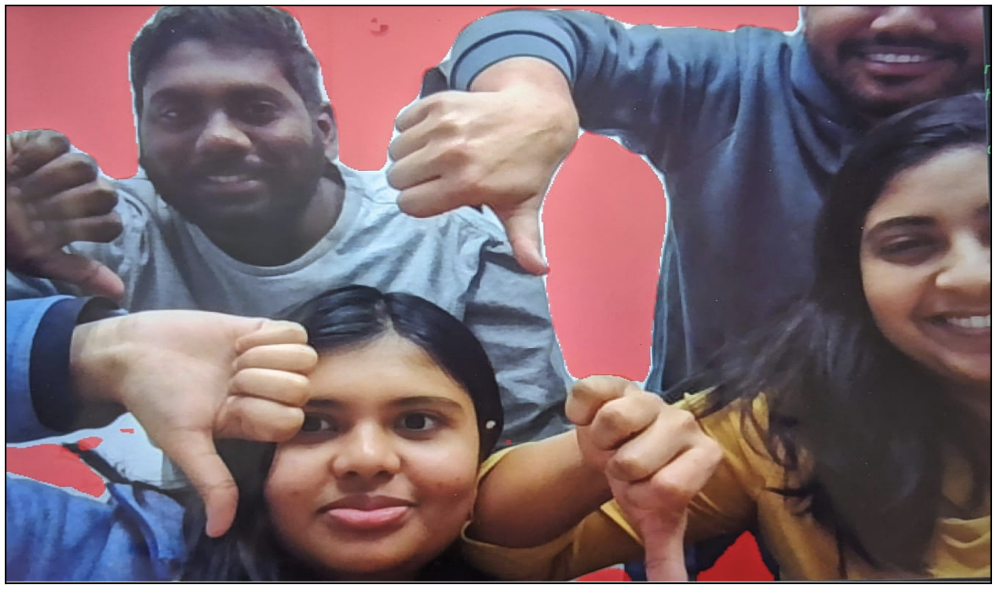

Project Overview
This project focuses on recognizing hand gestures and changing the live video background color using computer vision and machine learning. It uses hand landmark detection and segmentation models to enable real-time gesture-controlled background color changes.
Gesture Recognition Module
This module enables real-time hand gesture recognition using computer vision and machine learning. I began by using Google's MediaPipe Hand Landmark Detection to extract 21 precise keypoints from the user's hand, which capture detailed spatial information about finger positions and hand orientation. These keypoints were organized into JSON format to streamline preprocessing and ensure efficient model training and prediction.
To classify gestures, I initially implemented the K-Nearest Neighbors (KNN) algorithm. However, due to performance bottlenecks and lower-than-expected accuracy on complex hand shapes, I transitioned to Support Vector Classification (SVC). This significantly improved both accuracy (reaching ~90%) and real-time responsiveness. The pipeline involves normalizing and flattening the landmark data before feeding it into the SVC model.
Once trained, the model is integrated into a live video feed where it continuously predicts gestures based on incoming hand keypoints. These predictions are then used to dynamically trigger background changes, enabling a smooth and interactive user experience.
This module demonstrates my ability to build end-to-end ML pipelines — from data extraction and preprocessing to model selection, evaluation, and real-time deployment — while leveraging tools like MediaPipe, OpenCV, and scikit-learn.
Hand landmark detection using MediaPipe (21 keypoints)
Background Segmentation and Color Manipulation
This module focuses on dynamically altering the background of a live video stream based on real-time human segmentation. To achieve this, I integrated multiple pre-trained semantic segmentation models to isolate the human subject from the background and perform targeted background replacement. The backbone of this pipeline is DeepLabV3 with ResNet101, accessed via PyTorch’s torchvision library.
The process begins by capturing frames from a video feed, which
are preprocessed using standard PyTorch transforms. These frames
are passed through the segmentation models to generate pixel-wise
class predictions, identifying the human subject with high
precision. A binary segmentation mask is generated and applied to
isolate the person from the frame. The background is then replaced
with a specified color, with smooth blending achieved using
OpenCV’s addWeighted() function. The result is a
visually compelling output where gesture-based interactions
trigger dynamic background changes — for example, a "thumbs up"
gesture turns the background green, while a "thumbs down" makes it
red.
The module employs three distinct segmentation strategies:
- DeepLabV3 for robust semantic segmentation with high accuracy.
- Human Segmentor, a fine-tuned pipeline focused solely on detecting and isolating human figures in video frames.
- Semantic Segmenter built using LRASPP with MobileNetV3-Large, offering lightweight, efficient segmentation ideal for real-time performance.
Background color changes to green on thumbs up

Background color changes to red on thumbs down
Ethical Considerations
Ethical responsibility was a core focus throughout the development of this project. We took deliberate measures to ensure that the system operates fairly, respects privacy, and minimizes risk of misuse. The following key principles guided our approach:
-
Privacy Protection:
All data used in this project was sourced from publicly available Kaggle datasets that follow established privacy guidelines. No personal or identifiable information was collected or processed. -
Bias Mitigation:
To reduce the potential for bias, we avoided using raw image data during training. Instead, we extracted abstracted hand landmarks using MediaPipe, which represent structural information only. This approach helps ensure the model remains unbiased with respect to race, gender, or background. -
Prevention of Misuse:
The gesture recognition model is limited to detecting simple actions — such as "thumbs up" and "thumbs down." By narrowing the scope of predictions, we reduce the potential for inappropriate or unintended applications of the system.